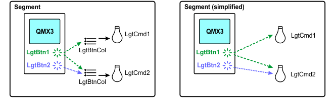
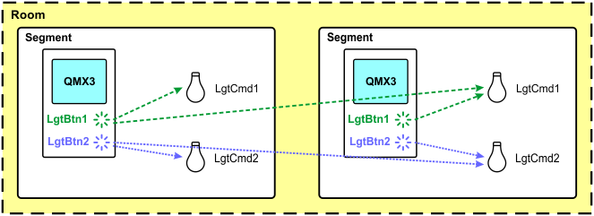
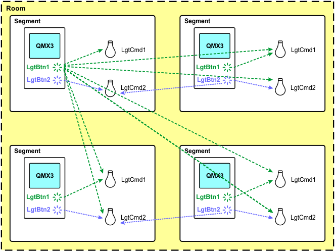

Assigning I/O's
I/O assignments are defined by connections between buttons and actuators. Buttons (e.g. LgtBtn) are connected to actuators over a button collection (e.g. LgtBtnCol), i.e. more than one button can be connected to a button collection that is tied to a button command (LgtCmd).

The following rules apply:
- Buttons are always connected to collections.
- Buttons and button collections are always in the same room but they might be in different segments.
Assignments are defined in tag pairs called disciplines (e.g. LgtBtn -> LgtBtnCol).
I/O | Collection |
|---|---|
LgtBtn(*) | LgtBtnCol |
BlsBtn(*) | BlsBtnCol |
PscDet(*) | PscDetCol |
Brgt(*) | BrgtCol |
You can combine different segments to a single room, where the individual buttons in a segment are used for the individual actuators in all segments of the room.
Example: 1 room with 2 segments

Example: 1 room with 4 segments

I/O's can be assigned in two ways:
- Individually for each automation station in the I/O assignment tab of the Details pane of a room.
Assigning I/O's (areas) - Per application template in the I/O assignment task.
Assigning I/O's (template)